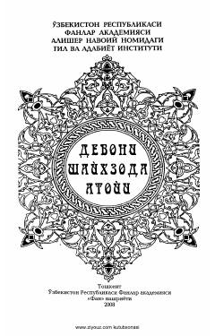

DSXV asr mumtoz shoiri Mavlono Atoiining tanlangan g'azallar devoni.
Ushbu kitob XV asrning birinchi yarmida yashab ijod etgan atoqli turkiy shoir Mavlono Atoiining devonidir. Nashrda shoirning ishq, ma'rifat, tasavvuf va tabiat mavzularidagi go'zal g'azallari jamlangan bo'lib, ular ilmiy-tanqidiy asosda tayyorlangan.